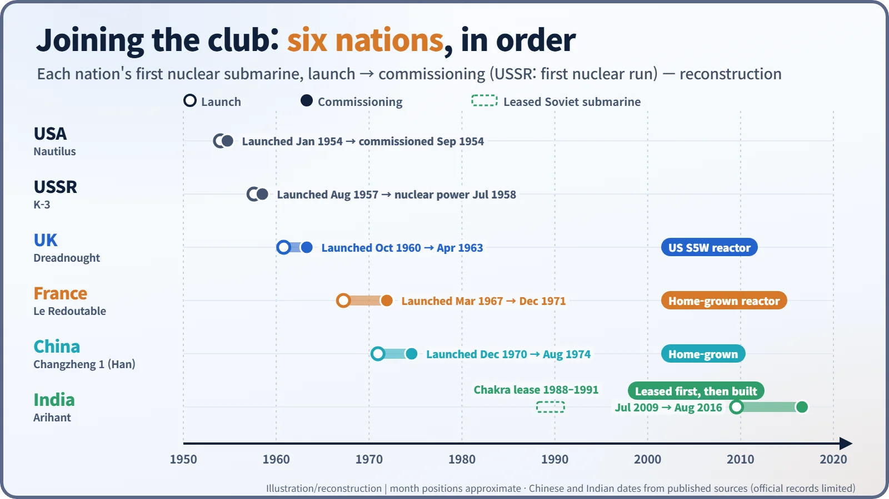
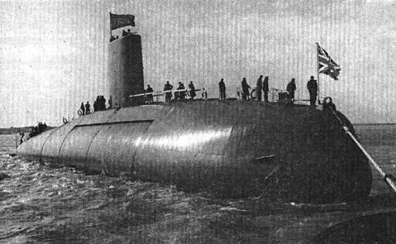
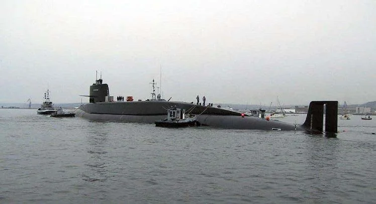
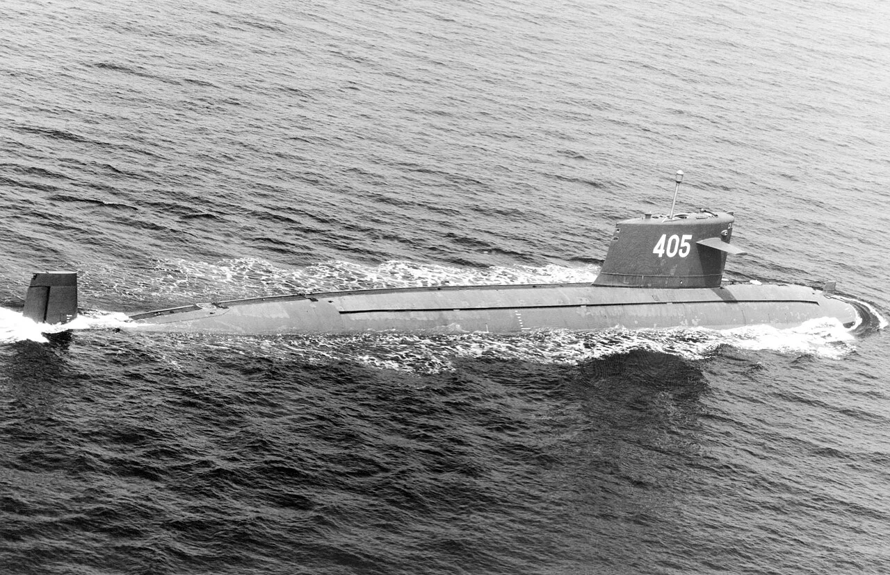
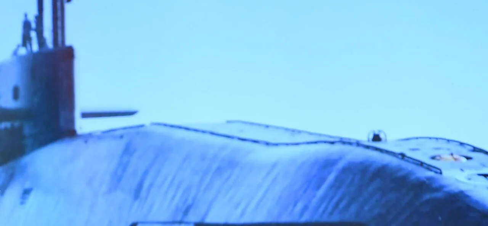

Nuclear History · 171
Even the Launch Date Was Chosen — Britain, France, China and India Build Their First Nuclear Submarines
One imported an American reactor, one built a submarine on land first, one went it alone and one learned on a leased boat: four routes into the most sensitive branch of reactor technology.
After the United States and the Soviet Union, four more nations built nuclear-powered submarines: Britain (HMS Dreadnought, launched 1960), France (Le Redoutable, 1967), China (Changzheng 1, 1970) and India (INS Arihant, 2009). Each took a different road, from importing an American reactor to building a land prototype first, going it alone, or learning on a leased Soviet boat.
Even the launch date was chosen
Launch dates are usually set by the shipyard calendar. Some, though, are plainly chosen on purpose. On 21 October 1960, Britain's first nuclear-powered submarine slid into the water on Trafalgar Day, the anniversary of Nelson's victory in 1805. On 26 July 2009, India launched its first home-built nuclear submarine on the anniversary of the end of the 1999 Kargil conflict. The dates alone tell you these boats meant more to their countries than another warship.
After the United States' Nautilus and the Soviet Union's K-3, four more nations acquired nuclear-powered submarines: Britain, France, China and India. What makes their stories interesting is that each reached the technology by a different road.

Britain: a British hull with an American heart
The man who pushed hardest for a British nuclear submarine was Admiral Lord Louis Mountbatten (1900–1979), First Sea Lord, the Royal Navy's professional head. He used his good relations with the US Chief of Naval Operations, Arleigh Burke, to seek American help. Hyman Rickover, head of the US naval reactors programme, at first opposed any transfer of technology, but he dropped his objections after visiting Britain in 1956, and the US–UK Mutual Defence Agreement of July 1958 opened the way. [2]

HMS Dreadnought was laid down at Barrow-in-Furness in June 1959 and launched by Queen Elizabeth II on Trafalgar Day 1960. She was commissioned on 17 April 1963. Her heart, though, was American: a Westinghouse S5W reactor, the same machinery plant as the US Skipjack class, supplied as a direct result of the 1958 agreement. Britain's own reactor, the Rolls-Royce PWR1, went to sea in the second boat, HMS Valiant, commissioned in 1966. Dreadnought, about 81 m long, was retired in 1980; defuelled, she still lies at Rosyth Dockyard awaiting dismantling. [2]
France: build the submarine on land first
No American naval reactor technology crossed to France. So the French built a "submarine on land" first: a land-based prototype reactor (the PAT) at Cadarache in southern France, which went critical in 1964 and gave crews and engineers operating experience. It was, in effect, France retracing the path the Americans had taken with the Nautilus prototype in the Idaho desert.
The result was Le Redoutable ("the formidable one"). She was launched at Cherbourg on 29 March 1967 with President Charles de Gaulle looking on, and entered operational service on 1 December 1971. She was a strategic ballistic-missile submarine from the start, and at 8,920 tonnes submerged she displaced more than twice as much as Dreadnought. After 51 patrols over 20 years she was retired in 1991. [3]

Since 2002 she has been on show at the Cité de la Mer maritime museum in Cherbourg, with her reactor compartment removed, one of very few strategic nuclear submarines that members of the public can walk through.
China: support withdrawn, a project restarted
China's nuclear submarine effort, "Project 09", was approved in July 1958. Soon afterwards Soviet technical help could no longer be counted on; the project was postponed in 1963 and restarted in 1965. Engineers such as Peng Shilu, who led reactor design, and Huang Xuhua, later called "the father of China's nuclear submarines", had to find much of the way themselves. [4]

The first Type 091 boat, known in the West as the Han class, hull 401, was launched at the Bohai Shipyard in Huludao in December 1970 and commissioned on 1 August 1974 as Changzheng 1 ("Long March 1"). She was the first of five; retired in 2000, she is preserved at the Chinese Navy Museum in Qingdao. China has published little official detail about this period, so some dates, including the exact launch day, vary between sources. [4]
India: learn on a leased boat, then build your own
India took yet another road. In 1988 it leased a Soviet Charlie-class nuclear submarine for three years as INS Chakra, so that its sailors could learn by operating one. Meanwhile the Advanced Technology Vessel (ATV) programme, begun in 1984, was leading towards a home-built boat.

Arihant ("slayer of enemies"), launched at Visakhapatnam, carries an 83 MW pressurized water reactor. At the launch, Prime Minister Manmohan Singh said India did not have "any aggressive designs, nor do we seek to threaten anyone." The reactor reached criticality in 2013, the boat was quietly commissioned in August 2016, and in November 2018 the Indian Navy announced that she had completed her first deterrence patrol. The Arms Control Association counts India as the sixth country to develop a nuclear-powered submarine. [1] [5]
| Nation | First boat | Launched | In service | Reactor route |
|---|---|---|---|---|
| United Kingdom | HMS Dreadnought | 21 Oct 1960 | 17 Apr 1963 | US S5W under the 1958 agreement |
| France | Le Redoutable | 29 Mar 1967 | 1 Dec 1971 | Home-grown; land prototype critical 1964 |
| China | Changzheng 1 (Type 091) | Dec 1970 | 1 Aug 1974 | Home-grown |
| India | INS Arihant | 26 Jul 2009 | Aug 2016 | Leased Soviet boat 1988–1991, then home-built (83 MW PWR) |
The most sensitive branch of reactor technology
Four roads, then: Britain imported its first reactor from an ally, France built a prototype on land first, China went it alone after support was withdrawn, and India learned on a leased boat before building its own. The story continues. Brazil is developing a conventionally armed nuclear-powered submarine, and under AUKUS, announced by the United States, Britain and Australia in September 2021, Australia plans to acquire them too. That has prompted international discussion of how highly enriched uranium for naval reactors can be reconciled with International Atomic Energy Agency safeguards.
Nuclear submarines remain the place where reactor engineering, national security and the non-proliferation regime meet most closely. Perhaps that is why even a launch date was chosen with care.